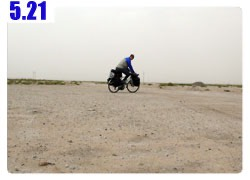
延續昨天的多雲陰天，早上整個天空不論往那個方向看都是白茫茫的一片。
氣候涼爽，適合騎車，完美！
毒辣的太陽在雲層之後，也只剩下一咪咪的亮度，完全無害。
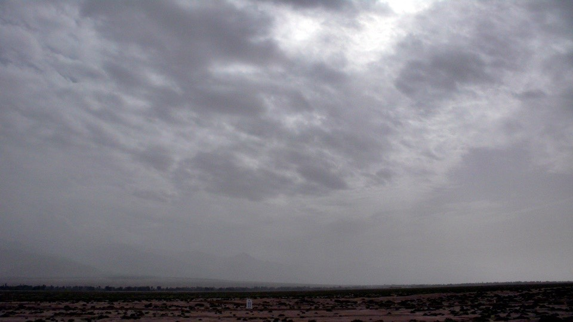
今天早餐就是吃昨天買的郊遊點心，吃薯片配花生牛奶和餅乾，邊騎邊吃，吃到飽大概已經解決了一半的零食。
帶著郊遊的心情出發，果然一離開高台就是上坡路，而且還吹著很強的逆風。
上坡已經夠難騎了加上逆風簡直是多補我一刀，用時速10公里龜速前進著。
拿出包包裡的衛生紙卷，被逆風吹得飄揚，可以用這個來玩放風箏，絕對會飛到半天高。
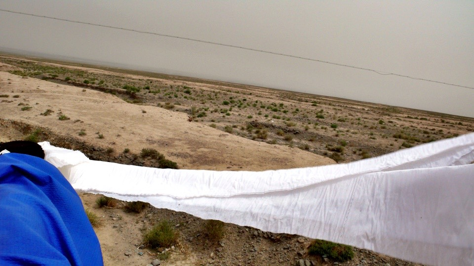
但是逆風也有逆風的好處，因為踏板踩起來很硬、很難騎，所以一時半刻也搞不清楚是因為坡陡還是因為風強。
所以就通通怪罪給逆風，反而沒有注意到坡陡難爬這件事，乖乖爬著坡，一下子又海拔上升了好幾百公尺。
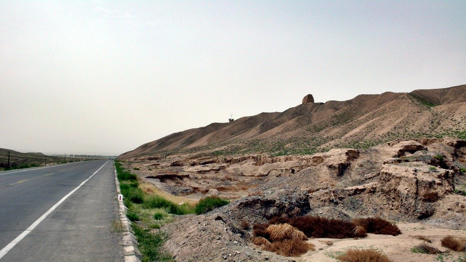
進入甘肅以來，最期待的就是看到沙漠，今天才發現，原來我早就經過了好幾個沙漠的地區。
只是這些沙漠看起來和我印象中的沙漠不太一樣，所以我不覺得這些是沙漠。
沙漠不都應該是沙子堆成的小山丘，植物就是仙人掌，還有駱駝跑來跑去嗎？
這幾個我經過的沙漠，都算是土堆，植物也不是仙人掌，跑來跑去的都是羊群。
那些綠色的植物乾掉之後，就會變成在沙漠中隨著風滾來滾去的小草堆。
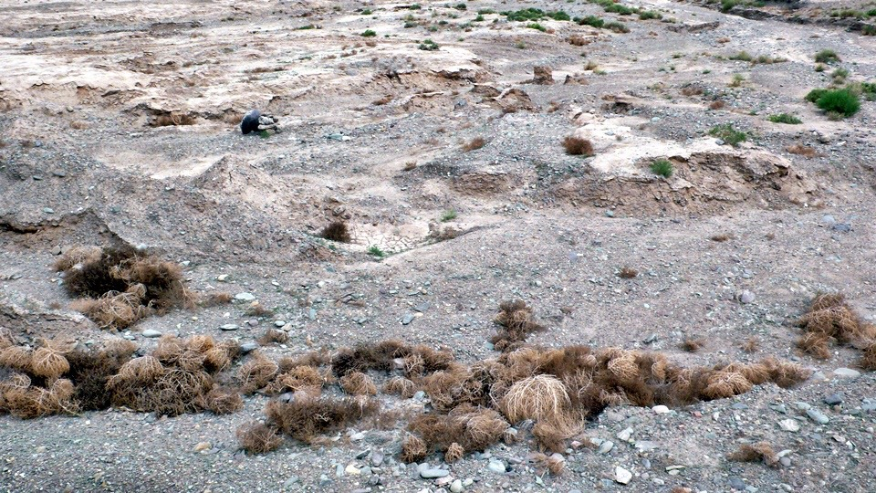
怎麼甘肅的沙漠和我想像中的一點都不一樣orz
難道要等到騎到新疆才會有我心目中的沙漠景色嗎？
城鎮跟城鎮的距離越拉越遠，真是有點危險，離開高台，連續爬40公里上坡，都是沙漠地區，
雖然因為太陽不大所以不會熱，但是眼見所及都是荒涼的區域，不論往那一個方向看，360度都可以看到地平線。
一直騎了40公里，才又重新出現人煙，原來人煙罕至就是這種感覺，越往西北走這個現象就越明顯。
看來接下來行李中的糧食和飲水，最好可以獨自在荒野中撐過一天，這樣的分量比較保險。
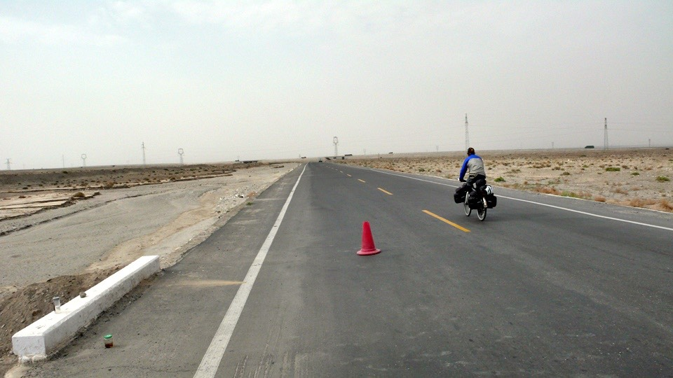
這個有人煙的地方，叫作元山子，騎到這裡正好中午十二點，吃午餐的時刻到了。
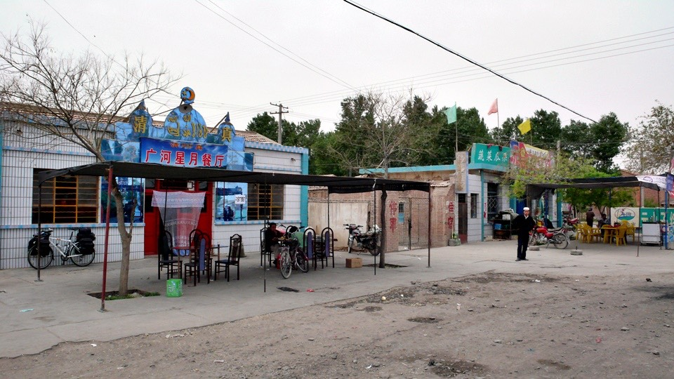
點了一種沒吃過的『過油肉拌麵』，在等餐點上桌之前就跑去雜貨店買冰棒吃。
這碗麵讓我等了半個小時，有那麼難煮嗎=..=
看起來不就是燒焦的肉片放在煮好的涼麵條上而已，但是燒焦的肉片味道還算不錯。
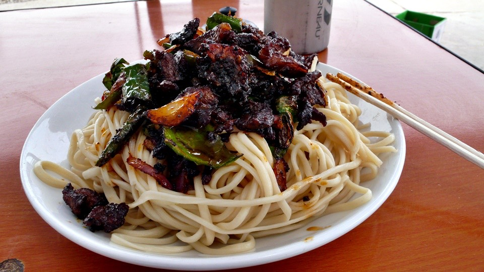
吃完最後一口，將盤子拿進去給店員，走回桌椅趴下休息的瞬間就睡著了zzzZZZ
昨天有點熬夜，看影集『PRISON BREAK』看太晚@@" 但是真的停不下來，怎麼那麼好看！
昏昏沉沉的補眠一下，睡醒之後揉揉眼睛，發現肚子又餓了，所以再點一份涼麵接著吃。
在等涼麵上桌之前，我又跑去買了冰棒解饞。
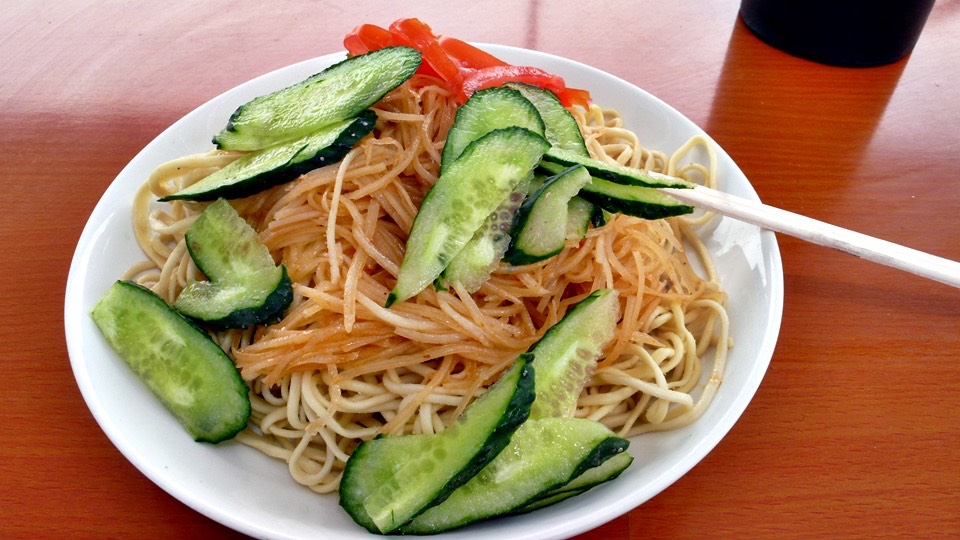
在元山子用餐的時候，有卡車司機從酒泉那個方向開車過來這裡用餐，趁機問一下接下來的路怎麼樣？
真是令人高興，爬坡已經結束了，從元山子繼續走就是平坦的路，然後下坡路一直滑到酒泉，輕鬆愜意。
就是整個吃個不停，不想上路騎車的感覺，吃飽又趴著瞇一下，休息到一點半終於甘心出發了。
因為甘肅後半段的行程排得很輕鬆，本來是規劃明天到酒泉，但是看來今天就可以騎到了。
而下一站，酒泉到嘉峪關，才短短30公里不到，如果我早上七點出發騎，那早上九點就可以收工找住宿。
這樣感覺有點蠢，點跟點太近的話就沒有意義了，很像在浪費住宿費，又不能好好休息一天。
所以今天打算騎到接近酒泉大概20公里左右就找地方住，然後明天中午經過酒泉，晚上則住在嘉峪關，
這樣還比較有邏輯一點，然後可以在嘉峪關休息個一兩天看長城的風光。
途中有下一點點的小雨，就是很小很小，不太能稱為雨的水滴落下一點點。
連雨衣都懶得穿，沒幾分鐘就停了，這裡的空氣佈滿了灰塵，這些落下的雨滴乾了之後，竟留下泥巴般的水漬。
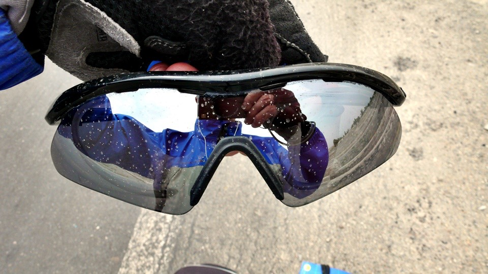
離開國道，騎到沙漠裡面，還以為都是一些沙子，一定騎不動輪胎會陷進去。
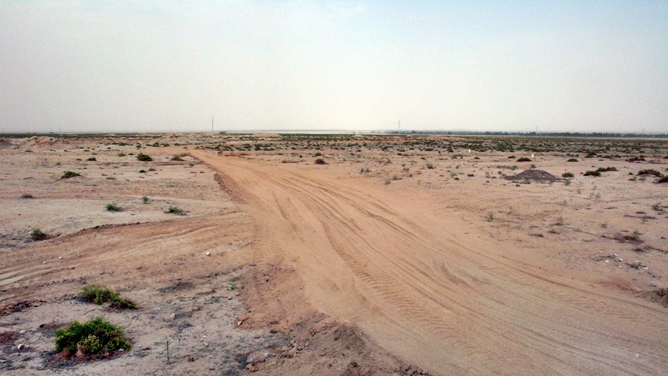
結果沙漠的土地比柏油路還堅硬，非常的好騎，帶足糧食的話，就可以挑一個方向，勇敢的騎進沙漠裡頭。
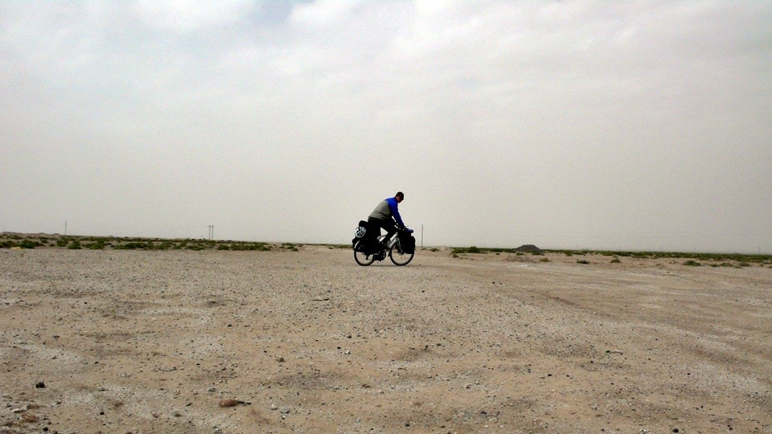
騎在一望無際的平坦道路上，卡車司機們通通都去走高速公路了，所以整條國道又被我一個人獨享。
四周的景觀就是土灰色的沙石地，長了一些綠色叢生的植物，也是一望無際的蔓延開。
連續好長一段路都是相同的景色，騎著騎著彷彿自己沒有在移動一樣，因為景色看起來都是一成不變。
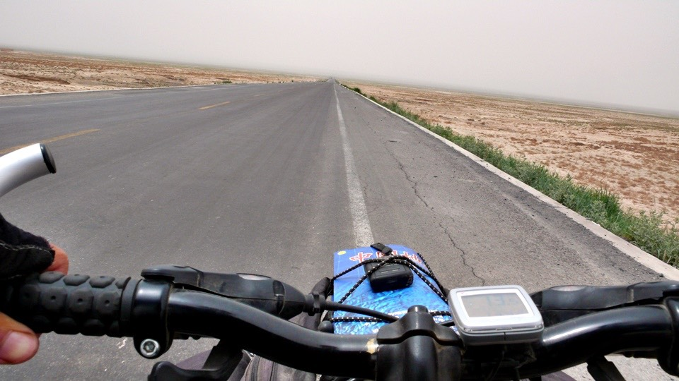
有看過人背人，那有看過車背車嗎？這個還算小意思，因為中國卡車很多，所以看過其他載的東西更誇張，只是都來不及拍。
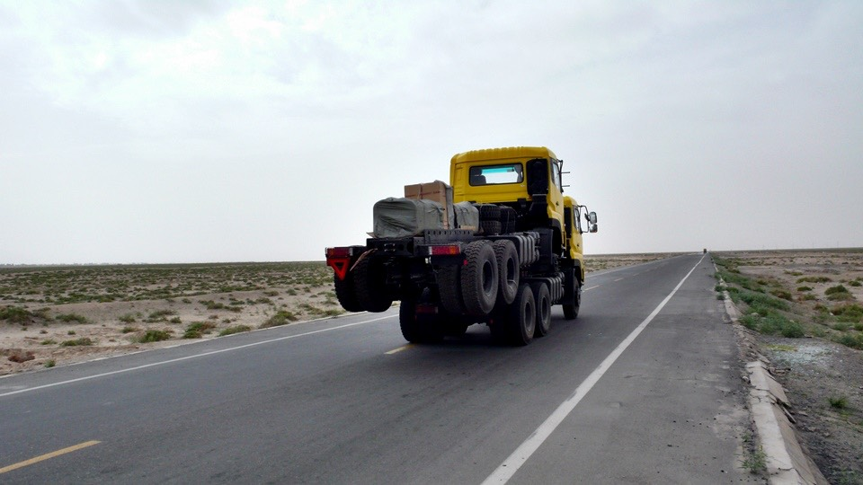
為了防止逐漸沙漠化的區域擴大，所以沿路都種了很多的樹，但好像種了就不管了，
所以很多都只剩下一根樹幹，葉子都掉光光，比較好還看得出是棵樹的，都是種在沙堆中，不知道還撐多久？
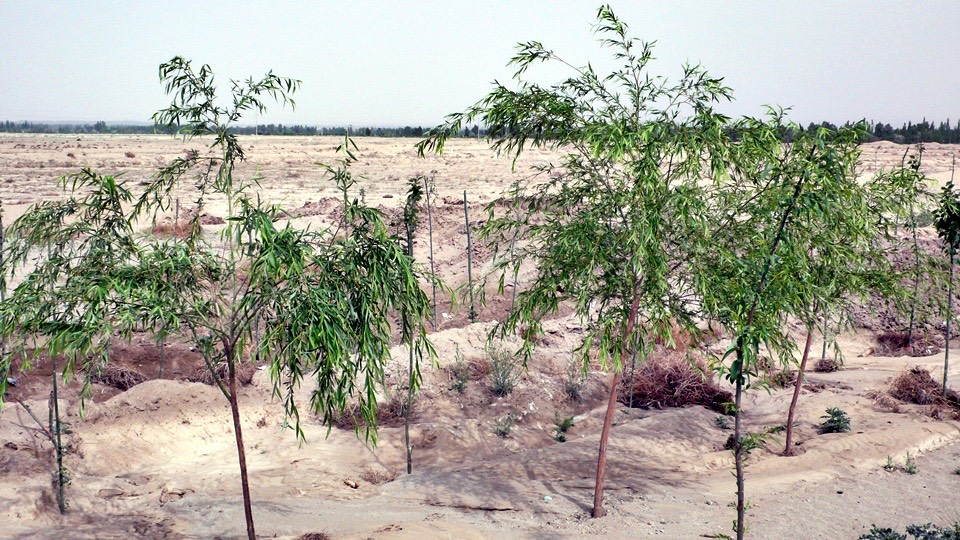
缺水缺得很誇張，幾百公尺寬的河床，本來應該是波濤洶湧的河水，現在只剩下一點點涓涓細流。
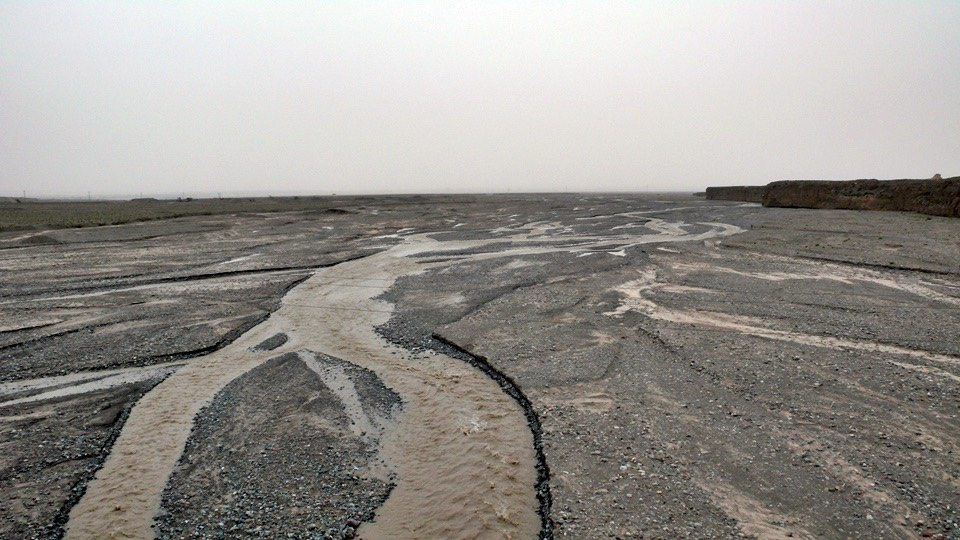
途中看到的老式房子，不論現在是西元幾年或是第幾世紀，偏遠地區的人們的生活都依循著記憶的痕跡走，
而不像城市人是依循著創新和破壞，這種藉由推翻過去來建立新生活的模式，在這邊歲月是沒有太大的意義的。
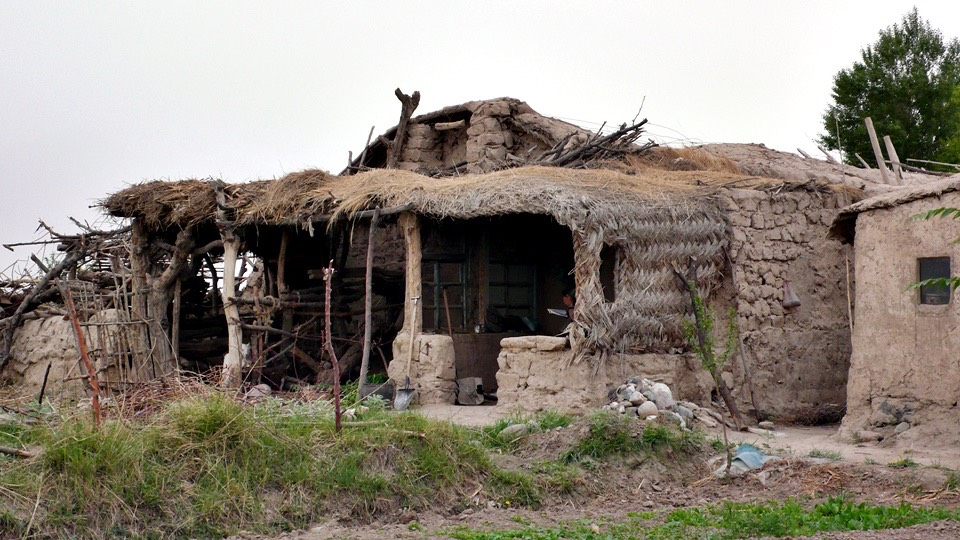
快要下山之後又漸漸出現了綠色，和奇怪的小泥屋，是因為這邊不下雨所以這樣的建築才蓋得起來嗎？
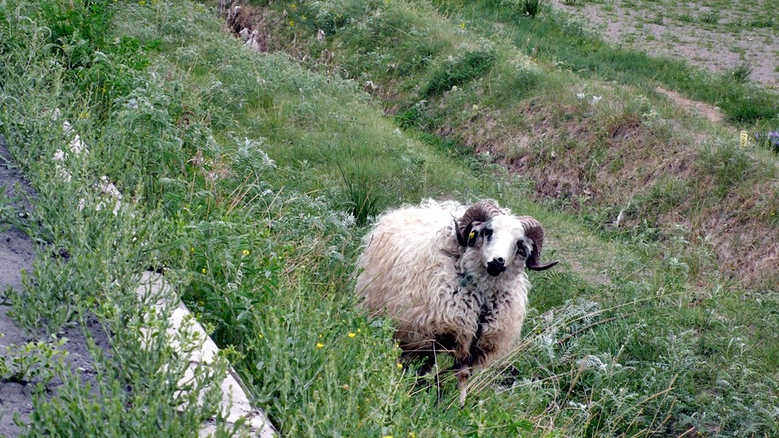
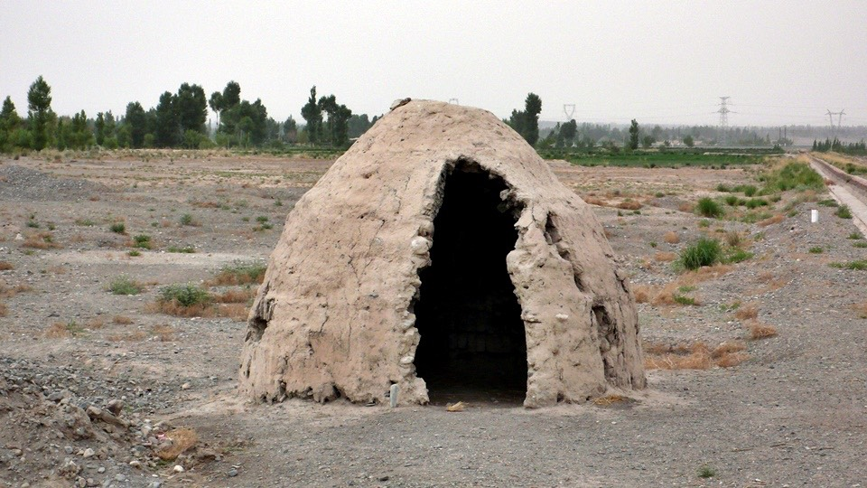
睜大眼睛開始找住宿的地點，下山後距離酒泉還有40公里，在這個距離內只要有一間旅館可以讓我住就好了，
今天絕對不騎到酒泉去，不僅疲累也不經濟，還是早點休息，留點路給明天騎比較好。
混在下課的學生當中騎車前進，都沒有人發現我 XD
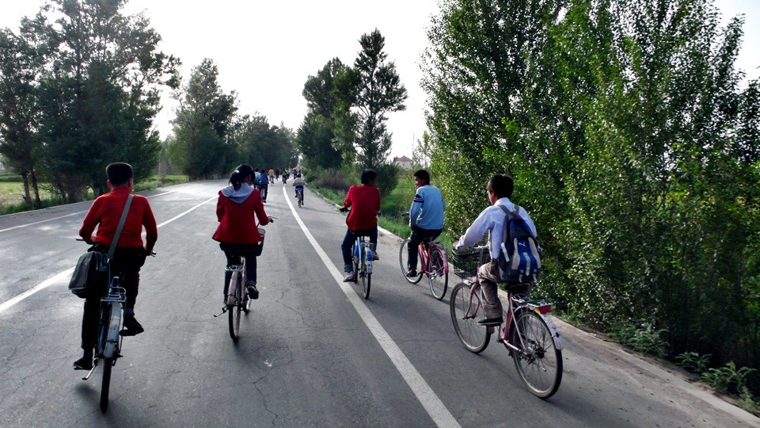
找到一間混合式經營的奇怪店家，旅館＋網吧＋烤肉店＋彩券行。
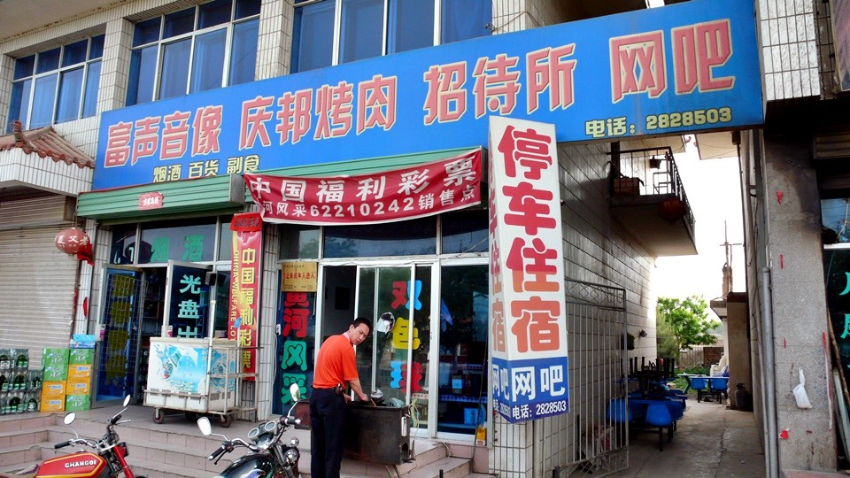
而且每一個都確實是有在經營當中，招牌不是寫好玩的，房價還可以接受，我一個人睡雙人房收20元。
這棟奇怪的複合式商店不知道是用什麼改建的，我睡的這一間門口掛的是『所長室』=.=
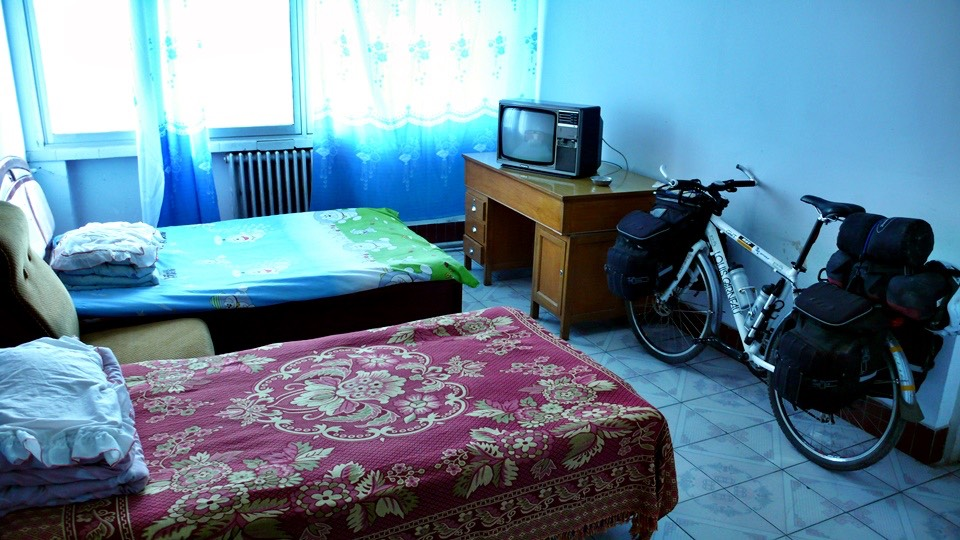
老闆娘忙著給來買彩卷的客人做生意，所以沒空招呼我。
中國的彩卷很便宜，台灣樂透彩一張要五十元台幣，這邊一張只要五毛錢，折合台幣不到三塊。
一樣是買個希望，花同樣的錢在這邊可以買到更多。
付過住宿費後，換上我的藍白拖鞋、海灘褲裝扮去找餐廳吃飯，
晚餐一邊吃著炸醬麵，一邊看七點的新聞聯播，中國的小麥再過一個月就是收成期了，
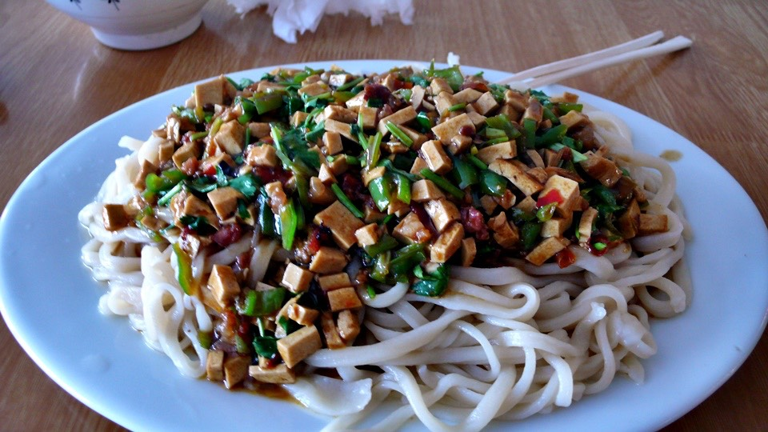
但是各地很多地方已經兩個月沒有有效的降雨，陷入嚴重乾旱狀態，這次小麥的收成可能會少四成之多。
說到乾旱，還真的我在中國騎車好一陣子了，才下過一次雨而已，雨水真的很稀少，
不知道這種大規模的乾旱跟氣候變遷以及溫室效應有沒有關係？
再這麼下去，不想點辦法救救地球的話，不僅冰山融化、海水上升，將來可能連吃的東西都沒有。
繼續閱讀：5.22 遠方的孩子
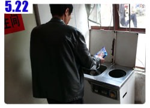
中國-人民幣－ 1：4.3 台幣
5.21
總計：42.5元
午餐過油肉拌麵7元、涼麵3元、晚餐炸醬麵5.5元、冰棒五支2.5元、非常可樂2.5元、住店20元、網吧一小時2元